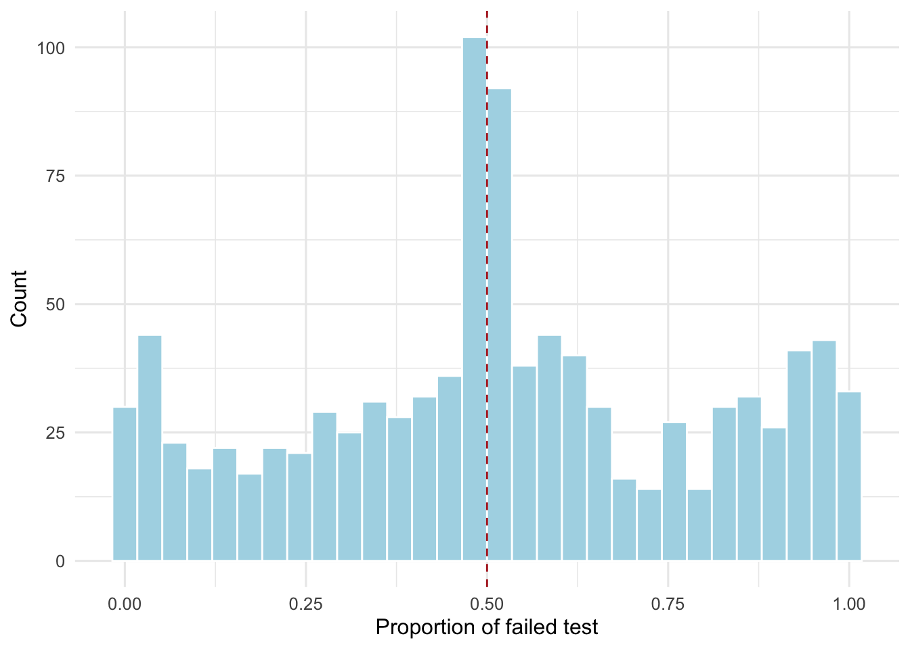

Packages used in this post
library(tidyverse)
library(rstanarm)
library(tidybayes)
library(modelsummary)
library(kableExtra)
library(ggsci)
library(patchwork)
library(janitor)
theme_set(theme_minimal(base_size = 12))Paw Hansen
July 2, 2023
Welcome to the first part of my three-part series on how to analyze randomized controlled trials (RCTs) using Bayesian thinking and methods. For this first post, I assume you have some basic understanding about what it means to be “working like a Bayesian”. If you are entirely new to Bayesian methods, check out the references at the bottom of the post.
To get us going, let’s begin by simulating some fake data to analyse. The code below simulates data for at hypothetical experiment in which students were randomly divided into either a treatment or control group. For context, let us imagine that the treatment is an intensive tutoring program. The outcome is dichotomous: did the students fail a reading test after the program ended or not? In our case, we’ll imagine that failing the test indicates dyslexia. 1
# Set the seed for reproducibility
set.seed(1407)
# Number of participants in each group
n_control <- 450
n_treat <- 450
# True probabilities of failing the test for each group
p_control <- 0.55
p_treatment <- 0.45
# Simulate data
fake <- tibble(
condition = rep(c("Control", "Treatment"),
c(n_control, n_treat))) |>
mutate(fail_test = ifelse(condition == "Control",
rbinom(n_control, 1, p_control),
rbinom(n_treat, 1, p_treatment))) A core idea in Bayesian thinking is that we should formalize and incorporate our prior beliefs into our analyses. That is, prior to seeing any data, what do we belief the treatment effect and other parameters of interest to look like?
Prior beliefs could come from multiple sources, including previous studies, expert knowledge, historical data, and many other. What really Bayesian modelling, Bayesian is that we explicitly specify these beliefs ahead of seeing the data and then update our prior beliefs based on the data.
Since our data has a dichotomous outcome, it makes sense to apply logistic regression. Hence, we have two parameters for which we need to consider our prior beliefs: the intercept and the treatment effect.
Sometimes, we only have a fuzzy sense about what the data might look like because little or no prior information is available. In those cases, we don’t want over prior beliefs to overshadow the data.
Say that was the case with our experiment on dyslexia. We would then rely on the default priors in rstanarm. These are weakly-informative; serving a soft constraints while leaving most of the leverage to the data. Because both the intercept and the treatment effect can take on any value, Normal priors are appropriate for both.
In code below, I ‘hard-code’ the default priors in rstanarm to make them explicit but you could also type in prior_intercept = default_prior_intercept() and prior = default_prior_coef() for the intercept and the treatment effect respectively. Further, To allow rstanarm to tweak our scales in accordance with the data, we set autoscale = TRUE.
Let’s run the model:
We can call prior_summary() to check that our priors have been specified correctly:
Priors for model 'fail_model_weakinf'
------
Intercept (after predictors centered)
~ normal(location = 0, scale = 2.5)
Coefficients
Specified prior:
~ normal(location = 0, scale = 2.5)
Adjusted prior:
~ normal(location = 0, scale = 5)
------
See help('prior_summary.stanreg') for more detailsNotice that because we set autoscale = T rstanarm adjusted the prior for the treatment effect to have scale = 5.
We can also plot these distributions to do a visual inspection, for example using histograms:
More generally, we should always set PD = TRUE in our first call, because rstanarm will then simulated data based on our prior beliefs. That way, we can check if the simulated data reflects our prior understanding.
I’ll show you two examples of how to use the simulated data to check your priors.
First, we can simulate 1,000 new data sets based on our priors. For each, we then calculate the proportion of students who failed the reading test. Recall that our prior understanding was fuzzy: we believed that it would center around 0 but this could vary quite a bit.
Let us make a histogram and see if the simulated data reflects this prior understanding:
set.seed(1407)
fake |>
add_predicted_draws(fail_model_weakinf, ndraws = 1000) |>
group_by(.draw) |>
summarize(proportion_fail = mean(.prediction == 1)) |>
ggplot(aes(x = proportion_fail)) +
geom_histogram(fill = "lightblue", color = "white") +
geom_vline(xintercept = .5, color = "firebrick", lty = 2) +
labs(y = "Count",
x = "Proportion of failed test")
Looks right! The histogram is centered around .5 but also has a lot of variation.
Second, we can simulate 100 treatment effects and see if these match our prior understanding. Recall, that we believed the treatment effect would center around 0 but that it could have a lot of variation to it (sd = 5).
These lines are all over the place, reflecting our weak prior understanding of what the treatment effect should look like. In other words, this looks exactly as we should expect.
The default priors in rstanarm are always a good place to start. Sometimes, though, we do have additional knowledge at our disposal. For example, let us pretend our intervention is not new. In fact, we have several previous studies on the topic and these have have tested quite similar interventions. How can we take this prior knowledge into account in our modeling?
Because the model is the same as before, we define priors for the same to parameters: the intercept and the treatment effect.
Concerning the intercept, suppose that previous studies have estimated the overall risk of failing the test from about 40 to 60 percent (because only students at-risk are asked to do the test, perhaps). We can specify our priors using the formula below:
\[ log(odds) = log(\frac{\pi}{1-\pi}) \]
Let us apply the formula to our 40 and 60 percent range:
# Define the range
lower_prob <- 0.4
upper_prob <- 0.6
# Calculate the log-odds
lower_logodds <- log(lower_prob / (1 - lower_prob))
upper_logodds <- log(upper_prob / (1 - upper_prob))
# Specify the prior - location will be in the middle of lower and upper logodds
prior_intercept <-
normal(location = (lower_logodds + upper_logodds) / 2,
scale = abs((upper_logodds - lower_logodds) / 4))Then our location for the intercept will be:
And the scale will be:
Second, we need to consider the treatment effect. Say we think that the chance of failing the reading test could be anywhere from 15 percent lower for the treatment group to no difference at all. Expressed in odds, these differences are .85 and 1 respectively. Let’s use that range to specify a prior for the treatment effect:
# Define the range
lower_effect_odds <- 1
upper_effect_odds <- .85
# Convert to log-odds
lower_effect_logodds <- log(lower_effect_odds)
upper_effect_logodds <- log(upper_effect_odds)
# Specify the prior for the treatment effect coefficient
prior_treat <-
normal(location = (lower_effect_logodds + upper_effect_logodds) / 2,
scale = abs((upper_effect_logodds - lower_effect_logodds) / 4)
)
# Print location and scale for the treatment effect
round(prior_treat$location, 2)[1] -0.08[1] 0.04Again, we should simulate data using our priors to make sure that the data reflects our prior understanding.
First we check that we specified the priors correctly. See Figure 4.
Priors for model 'fail_model_evidence'
------
Intercept (after predictors centered)
~ normal(location = -2.8e-17, scale = 0.2)
Coefficients
~ normal(location = -0.081, scale = 0.041)
------
See help('prior_summary.stanreg') for more detailsAnd then we can simulate 1,000 data sets using our prior distribution. For each draw, we calculate the share of students who failed the reading test (.prediction == 1) and plot those in a histogram:
set.seed(1407)
fake |>
add_predicted_draws(fail_model_evidence, ndraws = 1000) |>
group_by(.draw) |>
summarize(proportion_fail = mean(.prediction == 1)) |>
ggplot(aes(x = proportion_fail)) +
geom_histogram(fill = "lightblue",
color = "white") +
geom_vline(xintercept = .5, color = "firebrick", lty = 2) +
labs(y = "Count",
x = "Proportion of failed students")Our histogram reflects our prior understanding since we believed the proportion of failed test would range between 40 and 60 percent with about 50 percent being our best guess.
Second, for checking the prior treatment effect, we can make the same plot as before:
set.seed(1407)
fake |>
add_epred_draws(fail_model_evidence, ndraws = 100) |>
ggplot(aes(x = condition, y = fail_test, group = .draw )) +
geom_line(aes(y = .epred),
linewidth = .3, color = "lightblue") +
scale_y_continuous(labels = scales::percent_format()) +
labs(x = NULL,
y = "Probability of failing the reading test")Most of these lines slope downwards, indicating that the expected fail rate is lower in the treatment group than the control group.
One of the incredibly powerful aspects of Bayesian analysis is the ability to incorporate prior information into the analysis. In this post, I have shown how to specify an evidence-based and a weakly-informative prior as well as how to use simulation to check if these priors adequately reflects prior knowledge.
Johnson, A. A., Ott, M. Q., & Dogucu, M. (2022). Bayes rules!: An introduction to applied Bayesian modeling. CRC Press.
Gelman, A., Hill, J., & Vehtari, A. (2020). Regression and other stories. Cambridge University Press.
Ryan, E. G., Harrison, E. M., Pearse, R. M., & Gates, S. (2019). Perioperative haemodynamic therapy for major gastrointestinal surgery: the effect of a Bayesian approach to interpreting the findings of a randomised controlled trial. BMJ open, 9(3).
Goodrich, B., Gabry, J., Ali, I., & Brilleman, S. (2020). rstanarm: Bayesian applied regression modeling via Stan. Find many of their useful vignettes here.
Lüdeck, Daniel (December 7, 2017). Bayesian regression models in R: choosing informative priors in rstanarm. 11th Meeting of the Hamburg R-User Group. Slides retrieved here
Notice that although this is well-suited for our purpose, it actually represents a sub-optimal research design because we have discretized a variable for which it is fair to assume we would have a continuous measure, for example a test score for each student. By working with a dichotomous outcome, we are throwing away valuable information. Table↩︎